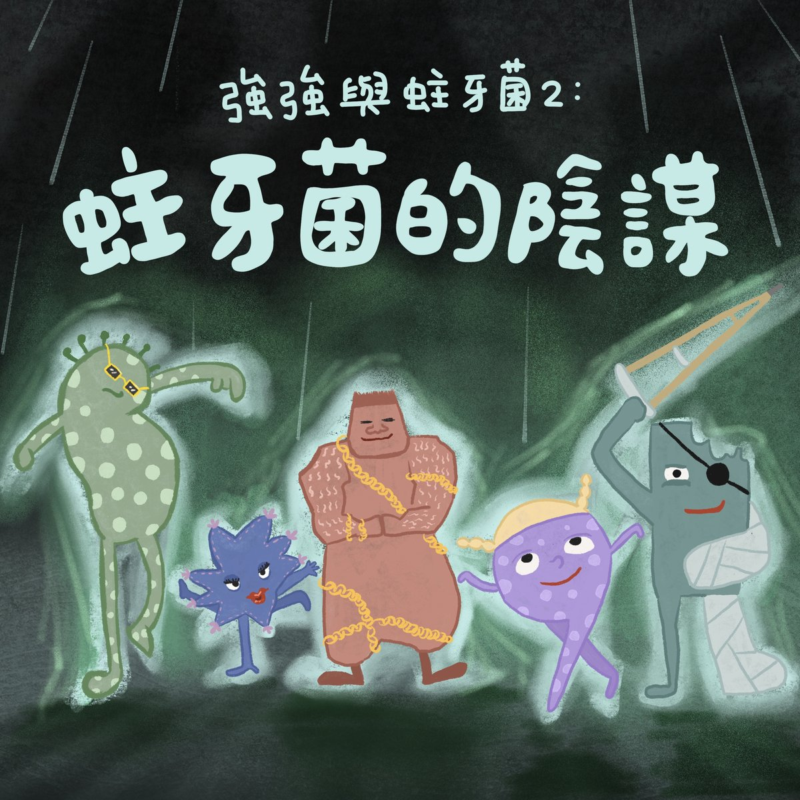

完整版廣播劇，含配音與音效，供角色聲音表情參考。
蛀牙菌又來了！這次他們趁強強吃了軟糖，用黏黏的糖把自己牢牢固定在牙齒上，好不容易撐過刷牙和漱口，正要開心慶祝——卻被媽媽檢查時一眼識破，全數沖進下水道。
哭著漂流的蛀牙菌，來到一個人類進不去的神秘基地：「壞壞病菌派遣公司」。原來世界上所有的髒髒菌、鼻涕菌、眼屎菌、壞病毒，都是從這裡被派出去工作的，一年三百六十五天全年無休。失敗的蛀牙菌們被叫進老闆辦公室，本以為要挨罵，老闆卻傳授了他的獨門絕招——「卑鄙陰險」：躲進牙刷刷不到、檢查也看不見的牙縫裡！
隔天，學會新招的蛀牙菌信心滿滿地躲進強強的牙縫，還忍不住得意地喊起口號——沒想到強強聽得一清二楚，還從他們的鬥嘴中把藏身處問了出來。一句「媽媽～我的牙縫裡有蛀牙菌，要用牙線～」，讓蛀牙菌的完美陰謀再次泡湯。
哈囉，我們來一起說故事囉！今天要說的故事叫做《強強與蛀牙菌2：蛀牙菌的陰謀》。
大家聽過強強與蛀牙菌的故事嗎？蛀牙菌偷偷躲在強強的嘴巴裡，想要在他的牙齒上挖洞，還好有牙刷、牙膏和漱口杯的幫忙，強強才能把牙齒刷乾淨，趕走蛀牙菌。
強強：（漱口）咕嚕咕嚕咕嚕，呸～～
眾蛀牙菌：可惡～～～
不過，難纏的蛀牙菌，每一天都還是會出現在強強的嘴巴裡。
蛀牙菌A：今天一定要躲好，不要再被刷掉了！
蛀牙菌B：剛好他今天有吃軟糖，我們可以用黏黏的軟糖把自己固定好，才不會被水沖走！
眾蛀牙菌：（此起彼落）說得沒錯！說得沒錯！真是個好機會！別小看我們蛀牙菌！
蛀牙菌在強強的嘴巴裡跑來跑去，找到沾著黏黏軟糖的地方，然後——
蛀牙菌A：嘿！
蛀牙菌B：黏住了！
蛀牙菌C：我也黏住了！
蛀牙菌D：這下，就不用擔心了～～
蛀牙菌A：大家加油，等一下不管是被牙刷刷還是被水沖，都絕對不能放手～
眾蛀牙菌：沒問題～
蛀牙菌A：來～蛀牙菌～～～
眾蛀牙菌：蛀牙！蛀牙！蛀牙！
那一天晚上，強強睡前刷牙的時候。
蛀牙菌A：哇～哇～哇～
蛀牙菌B：撐住啊⋯⋯
蛀牙菌C：快不行了⋯⋯
蛀牙菌D：加油～他快刷完了，再忍耐一下～
強強：（漱口）咕嚕咕嚕咕嚕，呸～～
（水流走的聲音）強強刷完牙、漱完口，蛀牙菌張開眼睛，發現——（超感人、奧運奪冠可能會聽到的配樂）
蛀牙菌A：我們，（強忍淚水宣布）還黏在強強的牙齒上！！
蛀牙菌B：成功了～～～
（眾蛀牙菌歡聲雷動）正當蛀牙菌開心地跳舞的時候，他們聽到一個奇怪的聲音⋯⋯（配樂結束）
媽媽：嗯？強強，你今天怎麼刷得這麼快？我來檢查一下喔⋯⋯
（眾蛀牙菌倒抽一口氣）
媽媽：強強，嘴巴張開——
蛀牙菌A：強強，不要張開～
強強：啊——
媽媽：你看最後面那顆牙齒凹進去的地方，橘橘的是什麼？
蛀牙菌B：什麼也不是，強強的媽媽，你看錯了啦～
強強：（張著嘴巴說）那個應該是橘子軟糖
媽媽：對，橘子軟糖，你沒有刷乾淨喔，媽媽幫你重刷一遍～
眾蛀牙菌：救命啊～～～～
強強：（漱口）咕嚕咕嚕咕嚕，呸～～
眾蛀牙菌：可惡～～～～～
那一天晚上，蛀牙菌還是跟以前一樣，通通被沖進下水道。
眾蛀牙菌：可惡～～～嗚嗚嗚
蛀牙菌在水管裡，邊流邊哭，不知不覺，流到了一個黑漆漆的地方，那個地方非常的神秘，從來沒有人去過，那裡人類進不去，因為，那裡是——
（歌舞片感）
眾公司職員：壞壞病菌派遣公司～
公司職員A：我們是誰
眾公司職員：壞壞病菌～壞壞病菌～
公司職員A：我們是誰
職員分別有精神地回答：髒髒菌！蛀牙菌！鼻涕菌！眼屎菌！咳嗽發燒一整個星期的壞病毒～
公司職員A：我們就是～
眾公司職員：壞～壞～病～菌～派～遣～公～司～
沒錯，這裡就是所有細菌跟病毒的大本營——壞壞病菌派遣公司。
大家常常覺得很奇怪，為什麼明明有刷牙了，隔天卻還是有蛀牙菌、要再刷一次，或是，為什麼明明有洗手了，過了不久，爸爸媽媽卻又說手上有細菌，要再洗一次？原來，那就是因為壞壞病菌派遣公司動不動就會叫壞壞細菌和壞壞病毒去工作，讓各式各樣的病菌跑到大家的身體裡。壞壞病菌派遣公司每天都非常認真地派出細菌和病毒，一年三百六十五天都不會休息。
蛀牙菌們被強強沖走之後，回到了壞壞細菌派遣公司。
蛀牙菌A：糟糕了⋯⋯
蛀牙菌B：今天又失敗了⋯⋯
蛀牙菌C：要被老闆罵了⋯⋯
秘書：蛀牙菌們
（眾蛀牙菌嚇到彈起來）
秘書：請到老闆的辦公室一趟。
眾蛀牙菌：（孬）⋯⋯好！
蛀牙菌們邊發抖邊走到了老闆的辦公室，他們緊張地推開門——
老闆：你們，又被強強打敗了嗎？
蛀牙菌們立刻跪在地上，完全不敢抬頭
蛀牙菌A：對不起！
蛀牙菌B：我們失敗了！
蛀牙菌C：我們下次一定會再更努力的！
老闆：哇哈哈哈哈哈哈，你們真是努力的蛀牙菌啊⋯⋯
蛀牙菌們有一點點高興，但是，老闆立刻變臉，他重重地拍了桌子
老闆：只有努力，是不夠的！我們身為細菌，當然要懂得卑鄙陰險的招式啊～啊哈哈哈哈哈
蛀牙菌A：卑鄙陰險？
蛀牙菌B：那是什麼意思？
蛀牙菌C：不知道
老闆：你們連卑鄙陰險都不知道？我的天哪！卑鄙陰險就是，我們要很壞！可是⋯⋯要壞得讓別人沒辦法發現⋯⋯呃呵呵呵呵呵呵呵
眾蛀牙菌：呵呵呵呵呵
蛀牙菌根本就聽不懂，但還是跟著笑了
蛀牙菌A：這個，老闆啊，你有什麼特別卑鄙陰險的招式嗎？
老闆：這個嘛，呵呵呵呵呵，那就是——躲在牙齒的縫隙裡！
眾蛀牙菌：什麼！
老闆說，不管是牙齒的外面、裡面還是咬合面，都很容易被牙刷刷到，就算辛辛苦苦黏在上面，也很容易在檢查的時候被發現。
老闆：但是，牙齒的縫隙呵呵呵呵呵，那是最安全最安全的地方了～
老闆說，他曾經躲在一個小朋友牙齒的縫隙裡很久，連小朋友的爸爸媽媽都沒發現，等到小朋友開始牙痛，牙醫才發現，雖然牙齒外面看起來很健康，但是，（忍不住笑）縫縫的部分，早就蛀牙了。
老闆：（恢復恐怖）蛀得很深很深，那個小朋友，去看了七次牙醫才把蛀牙治好，哇哈哈哈哈哈
蛀牙菌A：老闆真是太厲害了！
蛀牙菌B：我們就應該向老闆學習！
蛀牙菌C：沒錯沒錯！
蛀牙菌D：強強，你等著瞧吧～
眾蛀牙菌＋老闆：咿嘻嘻嘻嘻嘻
隔天，蛀牙菌們又偷偷地跑到了強強的嘴巴裡，到了刷牙時間，蛀牙菌們有點緊張，但是他們彼此加油打氣。
蛀牙菌A：大家，記得，我們要卑鄙陰險！
蛀牙菌B：沒錯，要學習當最棒的壞壞細菌！
蛀牙菌C：強強一定刷不到我們的！
蛀牙菌D：因為我們躲在牙縫裡呀～
蛀牙菌A：蛀牙菌～
眾蛀牙菌：蛀牙！蛀牙！蛀牙！
強強：咦？那是什麼聲音？
（眾蛀牙菌倒抽一口氣）
蛀牙菌A：他不可能聽到我們講話吧？
強強：為什麼不可能？
蛀牙菌B：因為我們是蛀牙菌啊！
強強：可是我就是聽得到啊！
蛀牙菌C：可是我們躲在牙縫裡啊！
強強：蛤！你們躲在牙縫喔！
蛀牙菌D：對、對呀！刷不到吧！ㄌㄩㄝㄌㄩㄝㄌㄩㄝㄌㄩㄝ
強強：媽媽～～我的牙縫裡有蛀牙菌，要用牙線～
（眾蛀牙菌倒抽一口氣）
媽媽：好～來，嘴巴張開
眾蛀牙菌：不要～～～～
強強：啊——
那一天，強強刷完牙、用了牙線、漱了口，（強強：咕嚕咕嚕呸）嘴巴又變得乾乾淨淨了。
眾蛀牙菌：可～～～～惡～～～～～
這就是今天的故事《強強與蛀牙菌2：蛀牙菌的陰謀》，感謝 Ollie 的提供喔！